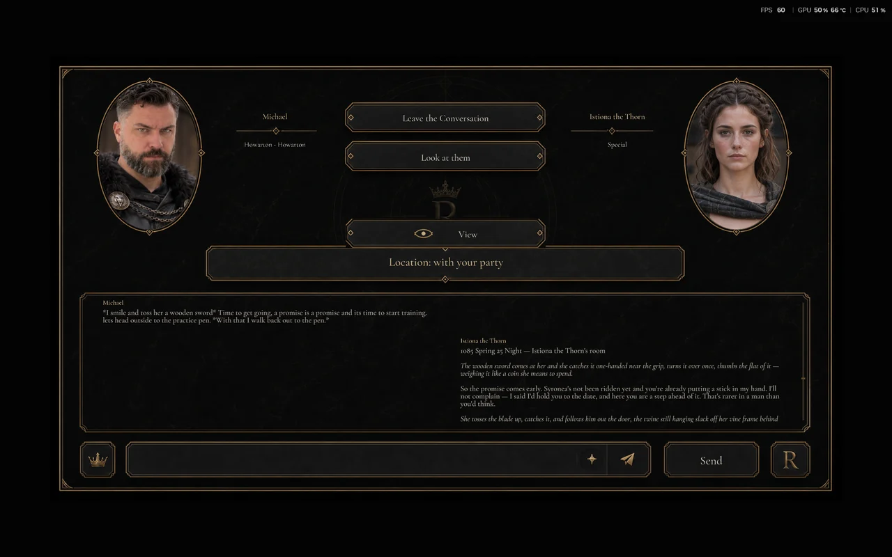
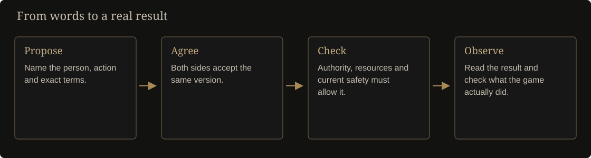

Your first conversation
Speak naturally, ask for a real action, and check what actually happened.
Approach, speak, and listen
#Open an eligible person's Reign conversation. With NPC Lives enabled, Approach can begin with what they are doing and how receptive they are. Speak naturally and be specific. “Could you tell me about your work?” is a useful first question. You can ask about their interests, recent events they might know, your relationship, or a practical request.
Use Enter or Numpad Enter to send a ready message. Alt+A opens the action builder when this conversation has an eligible participant and is not busy. Escape first backs out of a supported open image or outfit layer, or closes the conversation when no protected decision is in the way. A pregnancy choice has its own controls; do not assume Escape answers it.
NPCs can refuse, negotiate, misunderstand, conceal something, or ask for clarification. Their rank, duties, personality, relationship with you, and the people present matter. An adult civilian and a reigning monarch do not have the same authority.
Reopening a recent conversation can restore it silently instead of producing another greeting. An unfinished reply may still be running; reopening is not a reason to send the same request again. If you see a clear failure with a retry control, use that control and inspect the result.

Look for the writing area, the person you are addressing, and any action or pending-agreement controls. The current screen also has Look at them and View features described under Pictures and appearance.
Asking for a real action
#For an explicit mechanical request, press Alt+A in a supported, ready Reign conversation to open the action selector. Its builder starts with I would like you… for the other person to act or I wish to… for your own offer. Choose the person, action, target, and requested terms. Review the resulting sentence before sending it with your speech.
Inside the builder, Enter advances a text-entry step or accepts the completed action when its accept control is ready. Escape cancels the builder and returns to chat. Inserting the sentence does not send it: use the chat's Send button, Enter, or Numpad Enter after reviewing the full message. Alt+A is unavailable while the conversation is busy or has no eligible action participant.
The available choices depend on the person and situation. You may see Give…, Go to…, Support…, Government decisions…, Court and intelligence…, Party and military orders…, Diplomacy…, Clan and kingdom…, or Personal requests…. Search inside the builder if you know what you want.
The attached action sentence is kept as one meaningful unit. Editing the surrounding speech is different from changing the action's terms. If you change the agreement, review the new version and obtain fresh acceptance. A counteroffer is a new set of terms, not acceptance of the earlier offer.
In the focused message editor, Ctrl+A selects all, Ctrl+C copies, Ctrl+X cuts, and Ctrl+V pastes. Backspace/Delete remove selected text; their Ctrl variants delete by word. An attached action keeps its protected boundaries. Copying ordinary sentence text does not supply fresh agreement—use Alt+A to build the actual action again where needed.

Agreement is the beginning, not the result
#After a request, distinguish three things: what you asked, what the NPC accepted, and what actually happened. A journey can be accepted but still take time. A transfer can be blocked by ownership, missing funds, distance, captivity, a changed target, or another active duty. An unsupported request cannot become real merely because the reply sounds enthusiastic.
Check the action status and the native result: did the gold move, did the item change hands, did the party leave, did the treaty appear? A failure message is useful information. Correct the stated problem before trying again; repeatedly asking does not grant authority or multiply resources.
Ordinary roleplay can still matter to relationships and memories. Treating someone kindly, insulting them, making a serious promise, or betraying trust can have social consequences even when no inventory transfer occurs.
Terms, conditions, and ongoing agreements
#The action builder (Alt+A) can describe supported future timing, conditions, repeated payments, and exchanges with more than one term. Read who acts first, what triggers the next step, and what is still owed. “Give me this now and I will pay later” is different from an immediate exchange.
Only the agreed revision binds the participants. Countering an amount, recipient, location, or date needs fresh acceptance. A pending, waiting, failed, cancelled, or recovery-required agreement is not completed work. Use its supported revise or cancel route and inspect any terms already fulfilled; cancellation does not imply that history or a real transfer is undone.
Do not assume every conceivable condition is supported. The builder's actual choices and validation determine what the installed edition can do.
What you can ask people to do
#Supported action families include giving or trading gold, possessions, equipped gear, troops, prisoners, workshops, land, and ships where applicable; following, guiding, traveling, waiting, and patrolling; party and army orders; mercenary service, clan or kingdom membership; court and intelligence work; diplomacy; political support; meetings; and personal experiences.
Each has its own restrictions. Someone cannot give away another person's workshop, command an army they do not lead, or promise a government's vote on everyone else's behalf. A ruler's request and a peer's request are different. Ask the actual decision-maker and keep the purpose and terms clear.
If a guide agrees to Show the way, follow them in the scene. Their agreement does not teleport you to the destination. If you leave them behind, the task can remain waiting or require recovery.
Open the Action sentence system chapter for the full action list, timing, and when each choice appears.